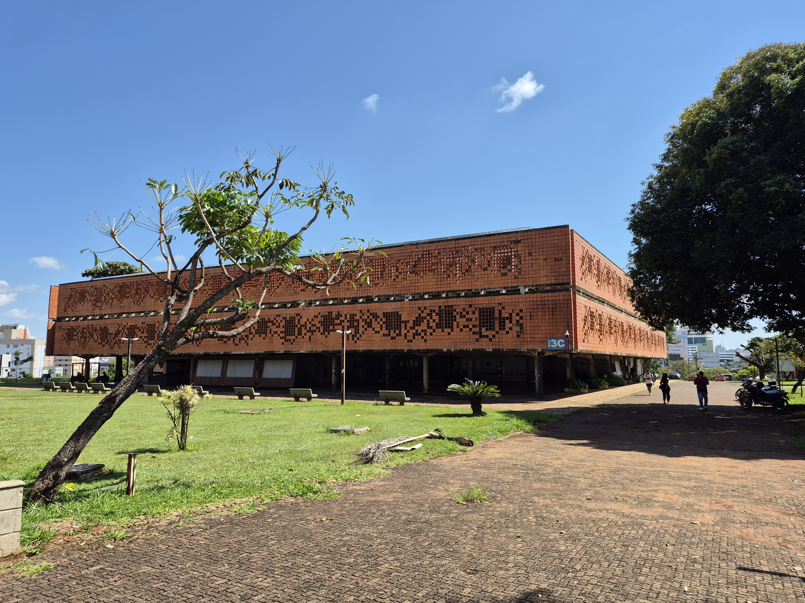

livro
abaco

Na biblioteca você consegue pegar livros emprestados de qualquer campus da UFU. Além disso você pode reservar salas de estudos e materiais audiovisuais para estudo. Você também pode fazer uso dos filmes, cifras de músicas e muito mais.
Para isso você pode fazer o cadastro no site.
Além disso, a biblioteca conta com um cinema na parte externa, em que você pode ver a programação e reserva de ingressos no site do Cinema da UFU.